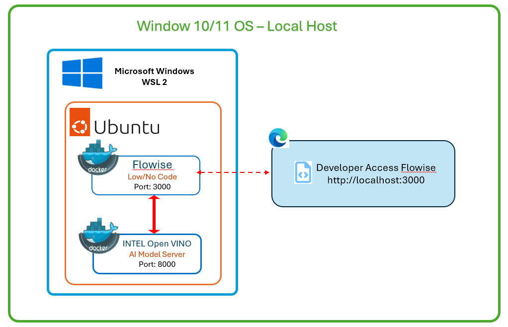

Step 1: Install Ubuntu 24.02 App from Microsoft Storeapt update && apt upgradeCopy
Step 2: Install Docker & Other Tools on Ubuntuapt install docker.io htop net-tools jq einops Copy
Step 3: Conda Installationmkdir -p ~/miniconda3
Copy
Step 4: Local Setup (Folders will be created in Windows as
we using Mount folder)mkdir /mnt/c/myfolderCopy
Step 5: OpenVINO Model Server Installationconda create --name OpenVINO312 python=3.12Copy
Step 6: Flowise Installationcd /mnt/c/myfolder/llm/gitCopy
Step 7: hugginface Loginhuggingface-cli loginCopy
Step 8: (Optional) Getting Model Server Demoscd /mnt/c/myfolder/llm/gitCopy